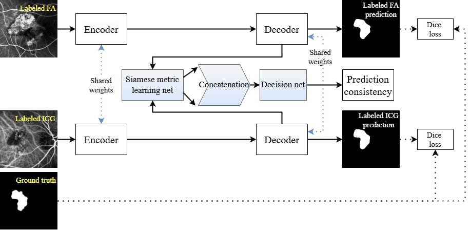

關於我
目前從事電腦視覺與嵌入式 AI 相關開發，具備醫學影像分析、影像分類與分割、模型部署及系統整合經驗。工作上主要負責影像辨識模型在實際設備上的應用。研究方面，曾以第一作者發表醫學影像相關期刊論文。此外，也持續透過個人專案探索 AI 安全與 LLM 應用等方向。

電腦視覺 / 嵌入式AI / AI應用
Computer Vision & Embedded AI Engineer
目前從事電腦視覺與嵌入式 AI 相關開發，具備醫學影像分析、影像分類與分割、模型部署及系統整合經驗。工作上主要負責影像辨識模型在實際設備上的應用。研究方面，曾以第一作者發表醫學影像相關期刊論文。此外，也持續透過個人專案探索 AI 安全與 LLM 應用等方向。
負責嵌入式 AI 影像辨識系統全端開發，涵蓋模型訓練、邊緣設備部署到 MCU 端整合。主要應用於駕駛監控系統（Driver Monitoring System），工作內容包含影像辨識模型訓練與部署至邊緣設備、ISP 影像處理環境建置與調校、MCU 控制功能開發如 OSD 顯示與蜂鳴器警示等推論結果回饋機制，以及嵌入式 AI 系統整合與測試。
使用技術：Computer Vision、Deep Learning、Embedded AI、Novatek、RTOS
以 Django 搭配 Temporal 工作流引擎建立網頁應用，透過 Ollama 在本地端運行大型語言模型，實現不依賴外部 API 的 LLM 聊天機器人。專案主要用於學習 AI 安全議題，內容包含整合本地端 LLM 聊天功能、設計 AI 安全相關挑戰與練習環境，以及透過實作理解 Prompt Injection 與 LLM 防禦概念。此專案也參考實際發生的 LLM 服務濫用案例，進一步理解 LLM 安全防護的重要性。
使用技術：Django、Temporal、Ollama
第一作者｜PubMed
針對多足息肉樣脈絡膜血管病變（PCV），提出基於半監督式深度學習的螢光血管攝影定位方法，利用標註與未標註影像提升模型表現。

使用技術：Deep Learning、Image Segmentation、Semi-supervised Learning、醫療影像